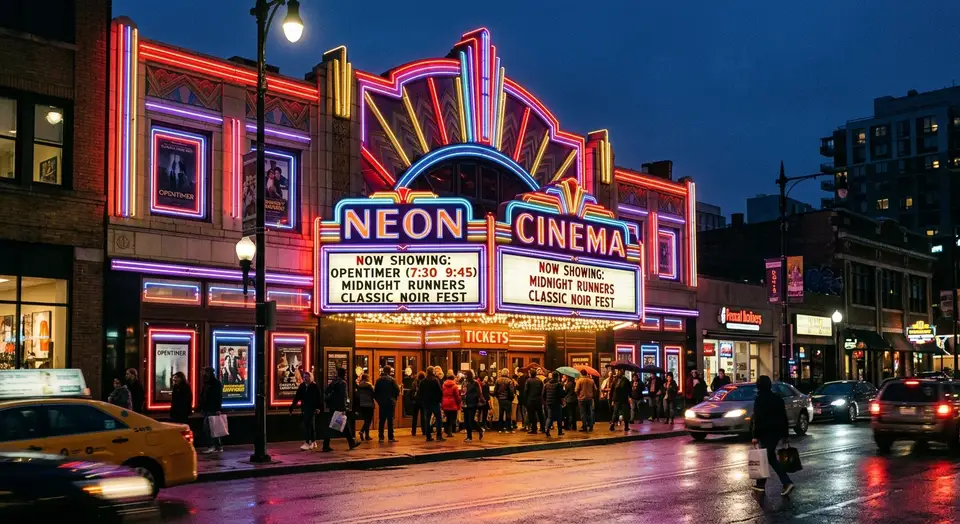
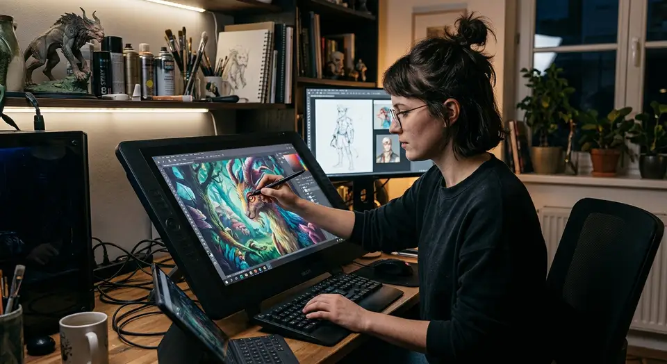

Underground
Why Lo-Fi Sci-Fi is Dominating TikTok
The intersection of social media aesthetics and indie filmmaking.
Underground cinema and viral culture for the next gen.

The intersection of social media aesthetics and indie filmmaking.


Analyzing the visual language of digital decay.